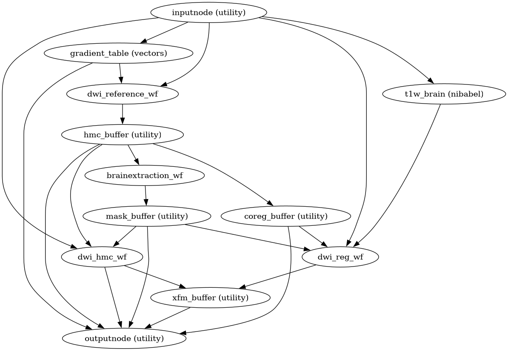

dmriprep.workflows.dwi package
DWI preprocessing workflows.
- dmriprep.workflows.dwi.init_dwi_derivatives_wf(output_dir, name='dwi_derivatives_wf')View on GitHub
Set up a battery of datasinks to store dwi derivatives in the right location.
- dmriprep.workflows.dwi.init_dwi_fit_derivatives_wf(output_dir, fieldmap_id=None, name='dwi_fit_derivatives_wf')View on GitHub
Set up datasinks to store fit-stage derivatives.
This workflow saves the outputs of the fit stage, including reference images, transforms, and rotated gradient directions.
- Parameters:
- Inputs:
source_file – DWI file used as naming reference.
hmc_dwiref – HMC reference image.
coreg_dwiref – Coregistration reference (SDC-corrected if available).
dwi_mask – Brain mask in DWI space.
motion_xfm – Per-volume motion transforms.
dwiref2anat_xfm – DWI-to-anatomical coregistration transform.
dwiref2fmap_xfm – DWI-to-fieldmap registration transform.
fmap_coeff – Fieldmap B-spline coefficients.
out_bvec – Motion-corrected (rotated) b-vectors.
out_bval – b-values file.
- dmriprep.workflows.dwi.init_dwi_fit_wf(*, dwi_file, precomputed=None, fieldmap_id=None, omp_nthreads=1)View on GitHub
Build a workflow to estimate all transforms for DWI preprocessing.
This workflow orchestrates the “fit” stage of DWI preprocessing, estimating head motion, eddy current distortions, susceptibility distortion corrections, and anatomical coregistration without applying any transforms to the data.
- Workflow Graph

(Source code, png, svg, pdf)
- Parameters:
dwi_file – Path to the DWI NIfTI file.
precomputed – Dictionary containing precomputed derivatives to reuse.
fieldmap_id – ID of the fieldmap to use for SDC. If None, no SDC is performed.
omp_nthreads – Number of threads for parallel processing.
- Inputs:
dwi_file – DWI NIfTI file.
in_bvec – File path of the b-vectors.
in_bval – File path of the b-values.
t1w_preproc – Preprocessed T1w image.
t1w_mask – Brain mask in T1w space.
t1w_dseg – Tissue segmentation in T1w space.
subjects_dir – FreeSurfer subjects directory.
subject_id – FreeSurfer subject ID.
fsnative2t1w_xfm – Transform from FreeSurfer native to T1w space.
fmap – Fieldmap image (if available).
fmap_ref – Fieldmap reference image.
fmap_coeff – Fieldmap B-spline coefficients.
fmap_mask – Fieldmap brain mask.
fmap_id – Fieldmap estimator ID.
sdc_method – SDC method identifier.
- Outputs:
hmc_dwiref – 3D b=0 reference used for motion correction.
coreg_dwiref – SDC-corrected reference used for coregistration.
dwi_mask – Brain mask in DWI space.
motion_xfm – Per-volume affine transforms for head motion correction.
dwiref2anat_xfm – Transform from DWI reference to anatomical space.
dwiref2fmap_xfm – Transform from DWI reference to fieldmap space.
fmap_coeff – B-spline coefficients for susceptibility distortion correction.
out_bvec – Motion-corrected (rotated) gradient directions.
{kind=link}
{kind=link}
- dmriprep.workflows.dwi.init_dwi_hmc_wf(*, omp_nthreads=1, model='DTI', name='dwi_hmc_wf')View on GitHub
Build a workflow for head motion and eddy-current estimation.
This workflow uses NiFreeze to estimate per-volume affine transforms for head motion correction and eddy-current distortion correction. The estimation uses leave-one-out cross-validation with diffusion models to predict each volume and register predicted to actual.
Importantly, this workflow only estimates transforms - it does not apply them. This enables downstream composition of all transforms for single-interpolation resampling.
- Workflow Graph

(Source code, png, svg, pdf)
- Parameters:
omp_nthreads – Number of threads for parallel processing.
model – Diffusion model for leave-one-out prediction (‘DTI’, ‘DKI’, ‘GP’, ‘average’).
name – Workflow name.
- Inputs:
dwi_file – DWI NIfTI file.
in_bvec – File path of the b-vectors.
in_bval – File path of the b-values.
dwi_reference – Pre-computed b=0 reference image.
dwi_mask – Brain mask in DWI space.
- Outputs:
motion_xfm – Per-volume affine transforms (list of files).
out_bvec – Motion-corrected (rotated) gradient directions.
motion_params – Motion parameters TSV file (BIDS confounds format).
estimated_file – HDF5 file containing full estimation results.
Notes
The estimation approach varies by model:
DTI: Tensor model, fast but less accurate for high b-values
DKI: Kurtosis model, better for multi-shell data
GP: Gaussian Process, most flexible but computationally intensive
average: Simple averaging, fastest but least accurate
{kind=link}
{kind=link}
- dmriprep.workflows.dwi.init_dwi_native_wf(*, fieldmap_id=None, jacobian=False, omp_nthreads=1, name='dwi_native_wf')View on GitHub
Build a workflow to resample DWI to native (corrected) space.
This workflow composes all transforms (HMC + eddy + SDC) and applies them in a single interpolation step to the DWI data. The output remains in DWI native space but is corrected for all distortions.
- Workflow Graph

(Source code, png, svg, pdf)
- Parameters:
fieldmap_id – ID of the fieldmap used for SDC, if any.
jacobian – Whether to apply Jacobian modulation for SDC.
omp_nthreads – Number of threads for parallel processing.
name – Workflow name.
- Inputs:
dwi_file – Original DWI NIfTI file.
dwi_mask – Brain mask in DWI space.
hmc_dwiref – HMC reference image.
motion_xfm – Per-volume motion transforms.
fmap_coeff – Fieldmap B-spline coefficients (if SDC).
metadata – DWI metadata dictionary.
- Outputs:
dwi_preproc – Preprocessed DWI in native space.
dwi_ref – Reference image (first b=0 after correction).
{kind=link}
{kind=link}
- dmriprep.workflows.dwi.init_dwi_preproc_derivatives_wf(output_dir, space='orig', name='dwi_preproc_derivatives_wf')View on GitHub
Set up datasinks to store preprocessed DWI derivatives.
- Parameters:
- Inputs:
source_file – DWI file used as naming reference.
dwi_preproc – Preprocessed DWI image.
dwi_ref – Reference volume from preprocessed DWI.
dwi_mask – Brain mask in output space.
out_bvec – Motion-corrected b-vectors.
out_bval – b-values file.
- dmriprep.workflows.dwi.init_dwi_reference_wf(*, omp_nthreads=1, name='dwi_reference_wf')View on GitHub
Build a workflow to generate a DWI reference from b=0 volumes.
This workflow extracts b=0 volumes, aligns them, and averages to create a robust reference image for motion correction.
- Workflow Graph

(Source code, png, svg, pdf)
- Parameters:
omp_nthreads – Number of threads for parallel processing.
name – Workflow name.
- Inputs:
dwi_file – DWI NIfTI file.
b0_ixs – Indices of b=0 volumes in the DWI series.
- Outputs:
dwi_reference – 3D b=0 reference image.
validation_report – HTML reportlet for validation.
{kind=link}
{kind=link}
- dmriprep.workflows.dwi.init_dwi_reg_wf(*, freesurfer=False, use_bbr=None, dwi2anat_dof=6, dwi2anat_init='t1w', omp_nthreads=1, name='dwi_reg_wf')View on GitHub
Build a workflow to register DWI reference to anatomical space.
This workflow computes the transform from DWI reference space to anatomical (T1w or T2w) space. When FreeSurfer outputs are available, boundary-based registration (BBR) is used for improved accuracy.
- Workflow Graph

(Source code, png, svg, pdf)
- Parameters:
freesurfer – Whether FreeSurfer outputs are available for BBR.
use_bbr – Force or disable BBR. If None, BBR is used when FreeSurfer outputs are available, with fallback to rigid registration.
dwi2anat_dof – Degrees of freedom for registration (default: 6 = rigid).
dwi2anat_init – Initialization method (‘t1w’ or ‘t2w’).
omp_nthreads – Number of threads for parallel processing.
name – Workflow name.
- Inputs:
dwi_ref – DWI reference image (SDC-corrected if fieldmap available).
dwi_mask – Brain mask in DWI space.
t1w_brain – Skull-stripped T1w image.
t1w_dseg – Tissue segmentation in T1w space.
subjects_dir – FreeSurfer subjects directory.
subject_id – FreeSurfer subject ID.
fsnative2t1w_xfm – Transform from FreeSurfer native to T1w space.
- Outputs:
dwiref2anat_xfm – Transform from DWI reference to anatomical space.
anat2dwiref_xfm – Inverse transform (anatomical to DWI reference).
fallback – Whether BBR failed and registration fell back to rigid.
out_report – Registration reportlet for QC.
{kind=link}
{kind=link}
- dmriprep.workflows.dwi.init_dwi_std_wf(*, fieldmap_id=None, jacobian=False, omp_nthreads=1, name='dwi_std_wf')View on GitHub
Build a workflow to resample DWI to standard (anatomical) space.
This workflow composes all transforms (HMC + eddy + SDC + coregistration) and applies them in a single interpolation step. The output is in the anatomical (T1w) space.
- Parameters:
fieldmap_id – ID of the fieldmap used for SDC, if any.
jacobian – Whether to apply Jacobian modulation for SDC.
omp_nthreads – Number of threads for parallel processing.
name – Workflow name.
- Inputs:
dwi_file – Original DWI NIfTI file.
t1w_preproc – Preprocessed T1w image (defines output space).
t1w_mask – Brain mask in T1w space.
hmc_dwiref – HMC reference image.
motion_xfm – Per-volume motion transforms.
dwiref2anat_xfm – Transform from DWI reference to anatomical space.
fmap_coeff – Fieldmap B-spline coefficients (if SDC).
metadata – DWI metadata dictionary.
- Outputs:
dwi_preproc – Preprocessed DWI in T1w space.
dwi_ref – Reference image in T1w space.
dwi_mask – Brain mask in T1w space.
- dmriprep.workflows.dwi.init_dwi_wf(*, dwi_series, precomputed=None, fieldmap_id=None, jacobian=False, min_dwi_vols=7)View on GitHub
Build a preprocessing workflow for one DWI run.
This workflow follows the fit/transform architecture, where:
Fit stage (
--level minimal): Estimates all transforms without applying them, including head motion correction, eddy current correction, susceptibility distortion correction, and coregistration to anatomical space.Transform stage (
--level resamplingor--level full): Composes all estimated transforms and applies them in a single interpolation step to minimize blurring.
- Parameters:
dwi_series – List of paths to NIfTI files.
precomputed – Dictionary containing precomputed derivatives to reuse, if possible.
fieldmap_id – ID of the fieldmap to use to correct this DWI series. If
None, no correction will be applied.jacobian – Whether to apply Jacobian modulation during SDC.
min_dwi_vols – Minimum number of volumes required to process.
- Inputs:
t1w_preproc – Preprocessed T1w image.
t1w_mask – Brain mask in T1w space.
t1w_dseg – Tissue segmentation in T1w space.
t1w_tpms – Tissue probability maps.
subjects_dir – FreeSurfer subjects directory.
subject_id – FreeSurfer subject ID.
fsnative2t1w_xfm – Transform from FreeSurfer native to T1w space.
fmap, fmap_ref, fmap_coeff, fmap_mask – Fieldmap-related inputs.
fmap_id – Fieldmap estimator ID.
sdc_method – SDC method identifier.
anat2std_xfm – Anatomical to standard space transform(s).
std_t1w, std_mask – Standard space reference and mask.
- Outputs:
hmc_dwiref – 3D b=0 reference for motion correction.
coreg_dwiref – SDC-corrected reference for coregistration.
dwi_mask – Brain mask in DWI space.
motion_xfm – Per-volume motion transforms.
dwiref2anat_xfm – DWI-to-anatomical coregistration.
dwi_preproc – Preprocessed DWI (if level > minimal).
- dmriprep.workflows.dwi.init_reportlets_wf(output_dir, sdc_report=False, name='reportlets_wf')View on GitHub
Set up a battery of datasinks to store reports in the right location.